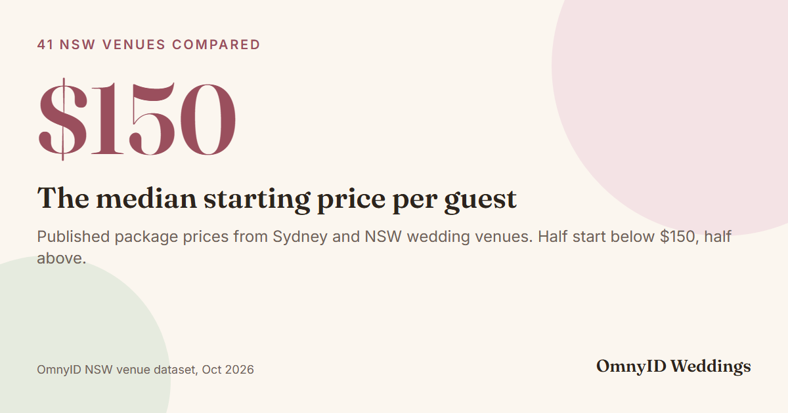

Topics in this guide
Most Sydney wedding budgets start with the venue, and most couples start by asking the same thing: what does it cost per person? Venue websites rarely make that easy to compare, so we collected the published starting prices from NSW venues and worked out the spread.
Key figures
- $150 is the median starting price per guest across 41 NSW venues that publish a per-head package.
- Half of those venues start between $110 and $190. The lowest is $75 and the highest is $295.
- City hotels have the highest median ($185), waterfront venues sit at $150, and heritage garden venues at $130.
- Of 47 venues with a recorded pricing model, 33 charge per head, 7 sell a package, 3 mix models, 2 charge a hire fee and 2 use a minimum spend.

How the 41 venues are spread
| Starting price per head | Venues | Share |
|---|---|---|
| Under $100 | 6 | 15% |
| $100 to $149 | 13 | 32% |
| $150 to $199 | 16 | 39% |
| $200 and over | 6 | 15% |
Price by venue setting
| Setting | Venues | Median | Range |
|---|---|---|---|
| City hotels and premium city venues | 11 | $185 | $95 to $295 |
| Iconic waterfront | 17 | $150 | $80 to $210 |
| Heritage garden estates | 7 | $130 | $80 to $199 |
Other settings had too few published prices to report. The widest gaps are within groups, not between them: a $95 city venue and a $295 one sit in the same row, so use the setting as a starting filter, not a rule.
What that means for a real guest list
Multiply the starting price by your guest count to see the floor of your venue-and-catering spend. The first quartile, median and third quartile below are $110, $150 and $190.
| Guests | At $110 | At $150 | At $190 |
|---|---|---|---|
| 60 | $6,600 | $9,000 | $11,400 |
| 80 | $8,800 | $12,000 | $15,200 |
| 100 | $11,000 | $15,000 | $19,000 |
| 120 | $13,200 | $18,000 | $22,800 |
How this compares with venue and industry advice
Our figures are starting packages, so they should sit at or below what couples end up paying. That is what a Sydney venue operator's own guidance suggests. Dockside Group, which runs waterfront venues at Darling Harbour, writes:
"In Sydney, a realistic starting point for a full reception including venue hire, catering and beverages is around $150 to $250 per person for a mid-range event."
Dockside Group (venue operator, Sydney), "How Much Does A Wedding Cost In Sydney", 24 June 2026.
Our median of $150 matches the bottom of that range, which is what you would expect from "from" prices. The same article makes the point that matters most for your budget:
"Guest numbers are the single biggest lever in a wedding budget."
Dockside Group, same article.
Our table shows why. At the median price, trimming 20 guests saves about $3,000 before any other change.
What "from" prices usually leave out
- Drinks upgrades and extended bar time. Check which beverage package is included and for how many hours.
- Venue hire, service charges and GST. Ask whether the per-head price is inclusive.
- Styling, AV and ceremony set-up. Some venues include these and others charge separately.
- Minimum guest numbers. A per-head price can come with a minimum headcount or minimum spend, so a smaller wedding may cost more per person.
For a way to catch these before they become arguments, see budgeting without losing the joy and the guide to choosing a vendor that fits. Next in this series: how long venue packages and curfews actually give you.
Frequently asked questions
How much does a wedding venue cost per person in Sydney?
Across 41 NSW venues that publish a per-head package, the median starting price is $150 per guest. Half of them start between $110 and $190, with a lowest of $75 and a highest of $295 (OmnyID NSW venue dataset, October 2026).
Is the starting price per head all-inclusive?
Not always. Starting prices usually cover the room, food and a basic drinks package, but what counts as included varies by venue. Ask about drinks upgrades, service charges, GST, styling and minimum guest numbers.
Which type of venue is cheapest in NSW?
In our data, heritage garden estates had the lowest median starting price at $130 per head, followed by waterfront venues at $150 and city hotels at $185. The samples are small and the ranges overlap, so shortlist by fit first.
How much would a 100-guest wedding venue cost in Sydney?
At the median starting price of $150, the floor for 100 guests is about $15,000. At the first and third quartiles ($110 and $190) it is about $11,000 to $19,000, before extras.
How we built this data
OmnyID Weddings keeps a directory of NSW wedding venues, mostly around Sydney with some Hunter Valley, Blue Mountains and coastal venues. For each one we record what the venue publishes on its own website and public listings: starting package prices, capacity, finish times, catering model, and whether a rain plan exists. Descriptions are written in our own words. This snapshot is from October 2026 and covers 176 venues. Not every venue publishes every detail, so each figure below states how many venues it is based on.
We left out any value we had to estimate, so every number here is something a venue has stated. Venue prices change, and "from" prices usually exclude extras, so treat these as a benchmark for shortlisting, not a quote. Confirm everything with the venue before you pay a deposit.
To cite this data: OmnyID Weddings, NSW wedding venue dataset (October 2026), omnyid.com/wedding.